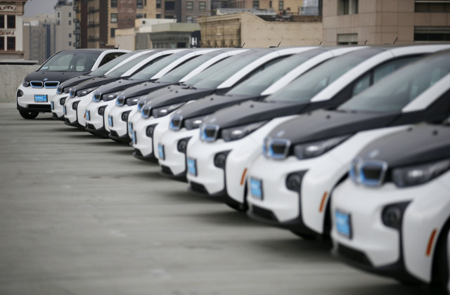
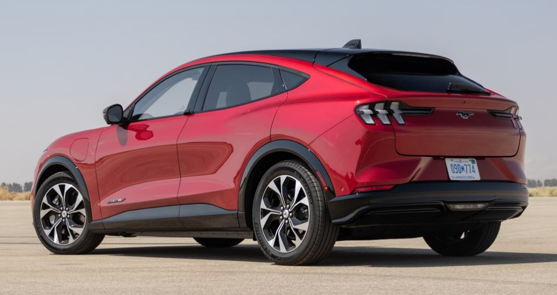

What Are Electric Vehicles?⚡
The Full Story
Electric cars are all the rage these days, often touted as the future of cars when ones powered by gasoline will become obsolete, or even illegal. There’s no doubt that electric cars will become more and more prevalent, but does the general public really understand what goes into making and maintaining them? We think many do not, so it is our mission to disambiguate everything. This includes what goes into making these cars, the ways they are used, and how they are kept running. If more people truly understand these things about EVs, then they will be able to make informed purchases with the knowledge of how they work and all their environmental impacts.
What would you like to know? 🧠
From more sustainable tree farms to reducing our use of single-use plastics, the effort to stop slowly killing our own planet is taking place on many fronts. Whie it’s debatable just how slow or fast the killing is at our current pace, any efforts to slow it down within reason should be taken. However, not all efforts are perfect or even do the job perfectly. For example, the need for more lumber can sometimes outpace the planting and growth of new trees and bioplastics often aren’t as biodegradable as they should be. Another area where this can happen but is not always considered is electric vehicles (EVs). The transition from internal combustion engine (ICE) vehicles to EVs is often touted as the obvious solution to reducing emissions from transportation, which is among the largest sources of greenhouse gas emissions in the United States. It is important to consider the full environmental impact of EVs, including the manufacturing processes, the extraction and processing of raw materials, the disposal of used or damaged batteries, and the source of the electricity that powers them.
While EVs may have lower emissions than ICE vehicles over their lifetime use, they also have significant environmental impacts during their production. It is important to consider the whole lifecycle of EVs when considering their environmental impact and to find ways to minimize their negative effects, rather than reducing the issue to whether or not the car has a tailpipe. Of course this is case-by-case, as you will see elaborated on in this website. As the occasionally competent Jeremy Clarkson once said, “It’s not about the car you drive, it’s how you drive the car.” While the industry is inevitably going towards only making EVs, for many people the option to switch over now is just that: an option. Why might one want to keep their ICE or buy a new one?
Our goal is to make sure you understand everything about electric vehicles.


W.A.E.V. Disambiguation Solutions
copyright 2025, no rights reserved